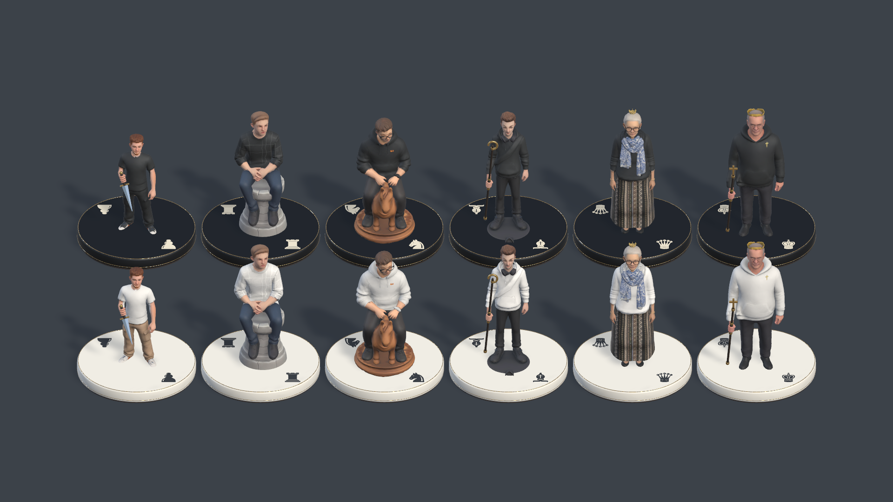
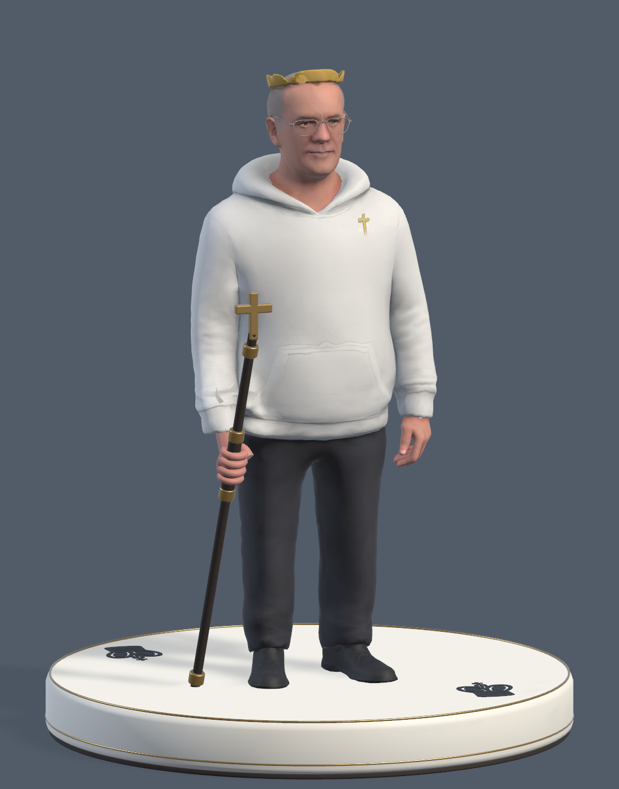
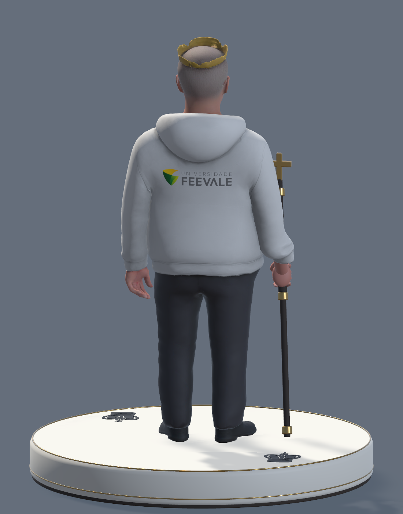

Roupa + porte + equipamento
Battle Chess: Game of Kings
A cor do time convive com detalhes das roupas. Os tipos combinam várias pistas, incluindo porte e acessórios. Para nós: preservar o vestuário ao trocar a cor.
Ver referência oficial ↗Chess CGI · Revisão dos personagens · 25.09.2026
Roupas revisadas, Feevale apenas nas costas e acessórios proporcionais. O mesmo personagem nas brancas e nas pretas, com leitura também pela parte superior.
Revisão visual do Gustavo, do elenco e do jogo · comparação e prioridades de acabamento.

Modelos reais no Unity. Seis personagens, duas cores de roupa, Feevale nas costas, acessórios proporcionais e símbolos nas bases. Arquivos e verificação.
A espadinha e o cetro ajudam na vista inclinada. Perto de 90°, os símbolos clássicos nas bases permanecem livres dos pés e da montaria. A captura do tabuleiro mostra as 32 peças; o reconhecimento por jogadores e a leitura em headset ainda precisam de avaliação.
Capturas dos prefabs no Unity, de perto. Escolha o personagem e o lado para conferir o tecido, a marca nas costas e o contato com os acessórios.


Ricardo mantém a cabeça e a pequena coroa originais. A Feevale aparece apenas nas costas, em uma textura própria. A revisão corrige vazamentos de cor e áreas da roupa confundidas com pele ou acessórios. Os símbolos foram afastados dos pés e da montaria.
Roupa + porte + equipamento
A cor do time convive com detalhes das roupas. Os tipos combinam várias pistas, incluindo porte e acessórios. Para nós: preservar o vestuário ao trocar a cor.
Ver referência oficial ↗
Formas clássicas + materiais + VR
Referência de acabamento e continuidade das formas entre lados. A linguagem clássica pode apoiar nossos personagens com símbolos discretos nas bases.
Ver referência oficial ↗Referência documental · unidades e funções
O Librarium associa o Terminator à torre e o Librarian à rainha, cada um com equipamento próprio. Sugere pensar a peça como um conjunto coerente de pessoa, postura e objeto.
Ver unidades na fonte oficial ↗Referência documental · limite para o nosso projeto
A descrição troca torre por golem e cavalo por quimera. O contraste de corpos é forte, mas essa transformação entraria em conflito com o reconhecimento da turma.
Ver referência oficial ↗Fontes oficiais consultadas em 24/09/2026. As imagens são dos respectivos jogos; as aplicações ao Chess CGI são propostas nossas, ainda sem teste de reconhecimento. Notas da pesquisa.
Ruivo, camiseta, cargo e tênis. Espadinha curta, com a mão realmente segurando o cabo; cabeça livre.
Feevale apenas nas costas da camiseta.
Camisa xadrez e postura sentada. Valorizar o parapeito da torre existente, visível ao redor do corpo.
Marca nas costas, preservando o xadrez na frente.
Óculos, moletom e montaria. Melhorar o cavalo que já existe, mantendo sua forma reconhecível.
Feevale nas costas do moletom, abaixo do capuz.
Fones, moletom e alça transversal. Báculo inclinado com espaço livre em relação ao antebraço; cabeça livre.
Marca nas costas; frente livre para alça e fones.
Cardigan, lenço azul, saia estampada e óculos. Tiara pequena e silhueta da saia, preservando o penteado.
Marca nas costas do cardigan; lenço preservado na frente.
Moletom branco ou preto, óculos e dobra do capuz. Cetro com cruz e cabeça original restaurada, incluindo a pequena coroa.
Feevale apenas nas costas, abaixo do capuz.
Arquivo oficial para fundo claro
Arquivo oficial para fundo escuro
PNGs extraídos sem alteração do pacote oficial da Feevale. A aplicação sobre as roupas usa os arquivos oficiais.
Barra, mangas e contornos revisados. Regiões de textura separadas para que camisa, pele, fones e lenço mantenham seu acabamento.
Assinatura com contraste próprio para cada lado. As aplicações frontais e as letras antigas gravadas nos moletoms foram retiradas.
Closes de frente e costas dos seis personagens nos dois lados, mais vista superior, tabuleiro e preview. Escala desktop e VR verificadas por testes; desempenho e leitura no headset pendentes.